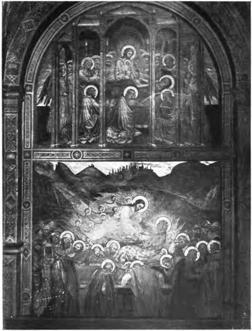

The Preparation Of The Wall. Continued
Description
This section is from the book "Mural Painting", by F. Hamilton Jackson. Also available from Amazon: Mural Painting: -1904.
The Preparation Of The Wall. Continued
Vitruvius gives the following directions for the preparation of a curved ceiling. Parallel ribs are to be set up not more than two feet apart; cypress is preferable, since fir is soon injured by rot and age. When the ribs have been got out to the right curve they should be fixed to the ties of the flooring above or to the roof with iron nails. The ties should be of wood not liable to injury from rot, age, or damp —such as box, juniper, olive, heart of oak, cypress, and the like, common oak always excepted, which from its liability to warp causes cracks in the work.
CHRIST BEARING THE CROSS.
By Nicolb di Pietro Gerini. In the Sacristy, Santa Croce, Florence.
The ribs having been fixed, Greek reeds previously bruised were to be tied to them with cords made of Spanish broom. On the upper side of the arch a composition of lime and sand was to be laid, so that if any water fell from the floor above, or from the roof it might not penetrate. The arches having been prepared and interwoven with the reeds a coat was laid on the underside. The arenatum was afterwards introduced on it and it was then polished with chalk or marble. Paolo Veronese's frescoes at the Villa Maser were painted on cored ceilings made in much this manner. The ribs were of deal, with poplar laths, three inches by one inch, plastered above as well as below, as in the French framed ceilings, such as those at Versailles. Sometimes in Italy the upper portions of brick vaults were plastered, as in the Palazzo del Giardino at Parma. On damp walls an inner wall is advised by Vitruvius, with an air space or channels in the wall; if there is not room for this the rough coats should be made with pounded potsherds. Wiegmann says that the layers of mortar should be rubbed with a wooden rubber to remove the crystals which may form, that the wall should be always damp upon which the layers are applied; if four are used they should not be thicker than m. 0018, if only one or two they should be at least m. 0*027. The last coat of sand-mortar having become solid enough, finer mortar or stucco is applied, composed of calcareous spar and pounded marble. This spar is more often found in the ancient plasters than marble powder, though the Romans called this stucco marmoratum, but they called both by the same name. Of this plaster two or three coats are put on, gradually getting thinner and finer, the first m. 0.008, the second and third m. 0.004 to m. 0.002 thick. As soon as the consistency of these layers allows of it, they are to be beaten in every direction, which makes them more solid; afterwards the surface is smoothed with a flat polished stone, taking care to keep it wet. Often one only finds two coats pf marble, or even one, often the colour is borne on a coat of fine sand, lime, and broken terra-cotta. The thickness also varies, the medium thickness being m. 0.07. The ancient thickness is always greater than the modern. At S. Medard-des-Pr£s the coat of coarse sand and lime is m. 0.021 thick, covered with a second coat of finer mortar m. 0.004 thick, and a stucco on which the artist worked. The stucco of the pillars of the loggie is only m. 0*003. The thick ground keeps moist longer, and the painter could work for five or six hours without stopping On thicker layers which would keep damp still longer, thicker coats of colour could be applied, such as coloured mortars. According to the monk Denys, the Greek painters of the Middle Ages mixed straw with the lower coat and cotton-fibre with the upper. The stucco, by the beating of the baculi (an implement which appears to have survived to the present day in Ischia), became so close and fine in texture as in some cases to resemble marble. Vitruvius says "That which is well covered with plaster and stucco closely laid on, when. well polished, not only shines but reflects to the spectators the images falling on it." "Some persons, cutting slabs of plaster from the ancient walls, use them for tables; and the pieces of plaster so cut out for tables and mirrors are of themselves very beautiful in appearance." Although at the time of the Renaissance and in the modern revival of fresco the smooth surface with which the plaster was finished, as suggested in these extracts, was not approved by the painters, the remains of Roman wall-painting which hpve come down to us are almost universally executed upon such a surface and have lasted well for the most part, though that maf be partly owing to the wax varnish which appears to have been used to preserve the colours. A smooth surface takes longer to harden than a rough one. Sometimes it was roughened by rolling a linen clqth over it, which also made the texture even, and obliterated the marks of the trowel. Leo Battista Alberti says that nails were fastened into the wall to keep the coats of plaster on, and that bronze was better for this purpose than iron, but that he himself preferred the practice of inserting thin pieces of flint projecting edgewise from the joints of the stone, driven in with a wooden mallet. When the frescoes in the Vatican were examined by Cavaliere Agricola in the forties he found that the Heliodorus had suffered from a flue behind it—the plaster projected in some places nearly four inches from the wall! It had been secured with nails and the cracks filled in with some composition in 1702 by Carlo Maratta. One cannot help thinking that Leo Alberti's flint nails would have been of service here. The German manner of preparing the surface for painting is as follows. The surface is wetted with boiled or rain water till it ceases to absorb. Then a thin coat of plaster is spread over the part to be painted, rather rough. As soon as it begins to set (ten minutes or so, according to the season), a second thin coat is laid: somewhat "fatter" lime and sand in equal proportions. These two layers together are scarcely a quarter of an inch thick. A wooden trowel is used, and if the surface is required quite smooth some beaver nap is fastened to the trowel, or a dry brush is passed over the plaster in all directions. At Genoa the preparation of the intonaco is very careful. The lime is taken out of the pit with a spade from the centre, and is mixed with water in a trough with a sluice at the end till as thick as milk; it then passes through the sluice and a fine hair sieve into earthenware jars, filling them two-thirds full. When the water on the surface is clear it is poured off. After there is no more to pour off the lime is of the consistency of white paint and as smooth. It is now mixed—two parts of sand to one of lime, great care being taken to have the sand even, sharp, and not too dark in colour. Professor Hess said that if the plaster contains too much lime it becomes in-crusted too soon, is too smooth on the surface, and easily cracks. If it contains too little it is not easily floated and the plaster is not so lasting. A glass float should be used where a wooden one is unfit. The surface of the last coat should be slightly roughened to render it fit for painting on. "The wall thus prepared should be left for a quarter or half hour before beginning to paint." Professor Church says that the lime-putty prepared for the frescoes at the Houses of Parliament was of excellent quality, so that their failure cannot be ascribed to bad material. He also recommends the wall being well wetted with lime- or baryta-water before the plastering is commenced, and says that it should be dry, free from soluble saline matters, and not very porous, and should have a damp course. He gives a receipt for a fresh kind of plaster which he says he has found good. " Three parts of burnt lime in very fine powder are ground up with two parts of whitening or prepared chalk; the mixture is grouted and then strained through hair sieves; five parts of the putty thus obtained are mixed with five parts of sifted, crushed marble, or with five parts of sharp, fine, sifted sand, or with three parts of sifted pumice, or with the same quantity of infusorial (siliceous) earth; the whole being moistened with a sufficient quantity of lime-water to render working easy. For the undercoats the sand may be coarser, and a small quantity of the most silky and white asbestos, cut with scissors into short uniform lengths, will prove a desirable addition, lessening the risk of lack of continuity in the undercoats.1' In small works a smoother surface is required, and it may be polished by putting a sheet of paper on it and passing the trowel or the palm of the hand over it, which presses the roughnesses into the body of the plaster.
THE DEATH OF THE VIRGIN.
Fresco by Taddeo Bartoli in the Chapel of the Palazzo Pubblico, Siena.
Continue to: